CODING AGENTS AS PIXEL WORLD MODELS
traex/GPT-6.1-Sol · 0084
点击播放 · 原生 RGB 像素
逐轮保存的候选
回放视频、检查图与代码变化。
每份候选均可单独播放。实际图片检查记录在下方工具轨迹中。
候选 01播放与检查图
点击播放 · 原生 RGB 像素

展开代码变化
--- 上一保存版本
+++ 本次保存版本
@@ -0,0 +1,199 @@
+from pathlib import Path
+import numpy as np
+from PIL import Image, ImageDraw
+from scipy.interpolate import RBFInterpolator
+from scipy.ndimage import gaussian_filter, distance_transform_edt
+import cv2
+from artifact_io import save
+
+ROOT=Path(__file__).resolve().parent
+W,H=256,144
+im=np.array(Image.open(ROOT/'first_frame.png').convert('RGB')).astype(np.float32)
+yy,xx=np.mgrid[:H,:W].astype(np.float32)
+
+# All contour and surface information is drawn from the supplied photograph.
+statue_outline=[(111,77),(114,75.5),(117,76),(119,78),(122,84),(124,89),
+ (127,94),(129,99),(131,105),(132,111),(132.6,119),(133,125),(134,129),
+ (137,131),(140,132.5),(142,134.5),(141,137),(137,139),(130,141),
+ (120,142.5),(104,143),(98,142),(96.8,139),(96.3,133),(97.3,127),
+ (100,124),(105,122),(111,121),(115.8,118),(117,115),(113,114.5),
+ (109,113),(107,110.5),(105.5,107),(104.5,104),(103.6,101),(103.5,98),
+ (105,95.5),(107,94.5),(109.3,95),(109.5,90),(109,86),(109.5,81)]
+
+def polygon(points,scale=4):
+ a=Image.new('L',(W*scale,H*scale),0)
+ ImageDraw.Draw(a).polygon([(int(x*scale),int(y*scale)) for x,y in points],fill=255)
+ return np.array(a.resize((W,H),Image.Resampling.LANCZOS),np.float32)/255
+sm=polygon(statue_outline)
+
+shadow_outline=[(151,3),(157,0.5),(162,3),(167,11),(174,18),(181,22),
+ (190,26),(194,31),(195,37),(193,44),(190,49),(192,56),(194,65),
+ (194,74),(191,80),(190,85),(196,89),(197,94),(194,98),(199,101),
+ (203,103),(205,109),(214,111),(222,112),(223,118),(221,120),
+ (138,112),(133,107),(132,99),(132,92),(135,87),(141,84),(150,81),
+ (157,80),(156,76),(153,73),(153,69),(150,71),(147,71),(144,69),
+ (142,65),(141,59),(142,51),(142,43),(143,36),(147,30),(153,27),
+ (152,25),(148,22),(148,18),(148,14),(146,11),(150,7)]
+shpoly=polygon(shadow_outline)
+# Smooth spotlight reconstruction, constrained only by the unoccluded wall.
+seam=105.2+np.maximum(xx-71,0)*0.121
+wall=(xx>79)&(yy<seam-1.8)
+exclude=cv2.dilate(((shpoly>0.02)|(sm>0.02)).astype(np.uint8),np.ones((13,13),np.uint8))>0
+sample=wall&~exclude&((xx.astype(int)%4)==0)&((yy.astype(int)%4)==0)
+coords=np.stack([xx[sample]/100,yy[sample]/100],1)
+rbf=RBFInterpolator(coords,im[sample],kernel='thin_plate_spline',smoothing=.004,neighbors=100)
+wallfit=rbf(np.stack([xx.ravel()/100,yy.ravel()/100],1)).reshape(H,W,3).astype(np.float32)
+wallfit=np.clip(wallfit,0,255)
+# The removal apron includes the actual penumbra rather than a hard polygon.
+region=gaussian_filter(cv2.dilate((shpoly>.1).astype(np.uint8),np.ones((7,7),np.uint8)).astype(np.float32),.7)
+region*=np.clip((seam-yy)/1.3,0,1)
+region*=np.clip((115.5-yy)/2,0,1) # the platform's low, rectangular shadow stays put
+wall_bg=im*(1-region[...,None])+wallfit*region[...,None]
+# Optical opacity measured directly from the first frame. Multiplication preserves
+# the fixed spotlight gradient when the silhouette moves across the wall.
+trans=np.clip(im/np.maximum(wall_bg,1),.025,1)
+alpha=(1-np.mean(trans,axis=2))*region
+alpha[sm>.01]=0
+# Fill the small area covered by the foreground statuette.
+remove=(sm>.005).astype(np.uint8)
+remove=cv2.dilate(remove,np.ones((3,3),np.uint8))
+bg=cv2.inpaint(np.uint8(np.clip(wall_bg,0,255)),remove,6,cv2.INPAINT_TELEA).astype(np.float32)
+wall_statue=(remove>0)&(yy<seam-1)
+bg[wall_statue]=wallfit[wall_statue]
+# Keep the turntable a fixed ellipse; only its material rotates.
+platform=((xx-119.5)/27.5)**2+((yy-139.1)/9.0)**2<1
+repair=(remove>0)&platform
+platform_color=np.empty_like(bg)
+platform_color[:,:,0]=11+3*np.clip((xx-90)/56,0,1)
+platform_color[:,:,1]=13+3*np.clip((xx-90)/56,0,1)
+platform_color[:,:,2]=12+3*np.clip((xx-90)/56,0,1)
+bg[repair]=platform_color[repair]
+# Original shadow still behind the parts excluded for the statue: reconstruct that
+# zone without letting white foreground pixels become negative shadow opacity.
+for y in range(76,113):
+ sel=(remove[y]>0)&(np.arange(W)>128)&(y<seam[y])
+ # These pixels are at the shadow's lower-left edge.
+ if np.any(sel):
+ vals=alpha[y]
+ valid=(remove[y]==0)
+ bg[y,sel]=wallfit[y,sel]
+ alpha[y,sel]=np.interp(np.arange(W)[sel],np.arange(W)[valid],vals[valid])
+
+# Photographic row sections define a smooth ceramic solid. Its depth is analytic;
+# solving the turned ellipse gives an inverse texture map with no holes.
+bounds=[]
+for y in range(H):
+ ids=np.where(sm[y]>.3)[0]
+ if len(ids): bounds.append((y,ids[0]-.35,ids[-1]+.35))
+ys=np.array([r[0] for r in bounds]);left=np.array([r[1] for r in bounds]);right=np.array([r[2] for r in bounds])
+cent=(left+right)/2;rad=(right-left)/2
+# Depth of the hood, shoulder, seated robe, and circular porcelain foot.
+knot_y=np.array([76,81,89,95,103,112,118,124,131,137,143])
+depth=np.interp(ys,knot_y,[2.0,5.8,6.0,7.3,9.0,10.0,10.6,12.5,13.7,16,17.7])
+zc=np.interp(ys,knot_y,[4,4,3,2,0,0,1,-1,-1,0,0])
+# Slightly off-axis details revolve with the same fixed spindle.
+axis=119.7
+
+# Shadow scanlines have the independent light-view of the same volume. Its
+# horizontal perspective is greater than its vertical perspective in this setup.
+scenter=np.full(H,171.,np.float32);srad=np.ones(H,np.float32)
+for y in range(113):
+ ids=np.where(alpha[y]>.36)[0]
+ if len(ids):
+ scenter[y]=(ids[0]+ids[-1])/2
+ srad[y]=max((ids[-1]-ids[0])/2,1)
+valid=np.where(srad>1)[0]
+scenter[:113]=np.interp(np.arange(113),valid,scenter[valid])
+srad[:113]=np.interp(np.arange(113),valid,srad[valid])
+sz=np.interp(np.arange(H),[0,16,30,52,76,90,104,113,143],[9,8,2,0,0,-3,0,0,0])
+sratio=np.interp(np.arange(H),[0,20,35,68,80,96,109,120,143],[.83,.88,.65,.69,.81,.52,.7,1,1])
+
+
+def shadow_at(theta):
+ c,s=np.cos(theta),np.sin(theta)
+ wscale=np.sqrt(c*c+sratio*sratio*s*s)
+ center=171+(scenter-171)*c+sz*s
+ # The pedestal and platform have rotational symmetry and remain fixed.
+ stationary=np.clip((np.arange(H)-105)/8,0,1)
+ wscale=wscale*(1-stationary)+stationary
+ center=center*(1-stationary)+scenter*stationary
+ mapx=scenter[:,None]+(xx-center[:,None])/wscale[:,None]
+ return cv2.remap(alpha,mapx.astype(np.float32),yy,cv2.INTER_LINEAR,borderMode=cv2.BORDER_CONSTANT,borderValue=0)
+
+
+def object_at(theta):
+ c,s=np.cos(theta),np.sin(theta)
+ # 3x supersampling keeps moving ceramic edges subpixel smooth.
+ S=3
+ h,w=H*S,W*S
+ x=(np.arange(w,dtype=np.float32)+.5)/S-.5
+ y=(np.arange(h,dtype=np.float32)+.5)/S-.5
+ cy=np.interp(y,ys,cent).astype(np.float32)[:,None]
+ a=np.interp(y,ys,rad).astype(np.float32)[:,None]
+ b=np.interp(y,ys,depth).astype(np.float32)[:,None]
+ z=np.interp(y,ys,zc).astype(np.float32)[:,None]
+ # Rotation of an ellipse centered at (cy-axis,z).
+ cx=axis+(cy-axis)*c+z*s
+ cz=-(cy-axis)*s+z*c
+ dx=x[None,:]-cx
+ R=np.sqrt(a*a*c*c+b*b*s*s)
+ inside=np.abs(dx)<R
+ # Front root of the implicit rotated elliptical cylinder.
+ A=s*s/(a*a)+c*c/(b*b)
+ B=2*dx*c*s*(1/(a*a)-1/(b*b))
+ C=dx*dx*(c*c/(a*a)+s*s/(b*b))-1
+ dz=(-B-np.sqrt(np.maximum(B*B-4*A*C,0)))/(2*A)
+ u=(dx*c-dz*s)/a
+ v=(dx*s+dz*c)/b
+ mx=np.broadcast_to(cy+a*u,(h,w)).astype(np.float32)
+ my=np.broadcast_to(y[:,None],(h,w)).astype(np.float32)
+ texture=cv2.remap(im,mx,my,cv2.INTER_LINEAR,borderMode=cv2.BORDER_REPLICATE)
+ nx0=u/a;nz0=v/b
+ norm=np.sqrt(nx0*nx0+nz0*nz0)
+ nx=(nx0*c+nz0*s)/np.maximum(norm,1e-6)
+ nz=(-nx0*s+nz0*c)/np.maximum(norm,1e-6)
+ # Fixed, warm spotlight. Preserve the observed ceramic albedo and its detail.
+ lx,lz=-.72,-.694
+ oldn_x=nx0/np.maximum(norm,1e-6)
+ oldn_z=-np.abs(nz0)/np.maximum(norm,1e-6)
+ light0=.26+.74*np.maximum(oldn_x*lx+oldn_z*lz,0)
+ light1=.26+.74*np.maximum(nx*lx+nz*lz,0)
+ gain=np.clip((light1/light0)**.53,.55,1.75)
+ # Existing specular bloom is softened as it turns away from the light source.
+ texture=np.clip(texture*gain[...,None],0,255)
+ back=v>0
+ # Seen newly around the side: continuous robe colour with restrained vertical
+ # porcelain folds, rather than introducing a new unobserved decoration.
+ az=np.arctan2(v,u)
+ folds=1+.12*np.sin(az*17+y[:,None]*.10)*np.sin(theta)**2
+ texture=np.where(back[...,None],texture*folds[...,None],texture)
+ # True rim coverage, integrated at the output resolution.
+ op=inside.astype(np.float32)
+ op*=((y[:,None]>ys[0]-.6)&(y[:,None]<ys[-1]+1))
+ # Keep the foot seated against the spindle; it is nearly axially symmetric.
+ foot=np.clip((y[:,None]-136)/7,0,1)
+ # Sample photographed contour at zero rotation for the first transition.
+ if abs(theta)<1e-5:
+ op=cv2.remap(sm,mx,my,cv2.INTER_LINEAR,borderMode=cv2.BORDER_CONSTANT)
+ premul=cv2.resize(texture*op[...,None],(W,H),interpolation=cv2.INTER_AREA)
+ aa=cv2.resize(op,(W,H),interpolation=cv2.INTER_AREA)
+ return premul,aa
+
+frames=[]
+for i in range(20):
+ theta=np.deg2rad(i*3.55) # constant 14.2 degrees/second, viewed from above
+ if i==0:
+ frame=im.astype(np.uint8)
+ else:
+ sh=shadow_at(theta)
+ frame=bg*(1-sh[...,None])
+ # The black disk's unobtrusive outer highlight follows its clockwise motion.
+ # The rotation is chiefly visible in the mounted, asymmetric statuette.
+ color,opacity=object_at(theta)
+ frame=frame*(1-opacity[...,None])+color
+ frame=np.uint8(np.clip(np.rint(frame),0,255))
+ frames.append(frame)
+frames=np.stack(frames)
+save(frames,ROOT)
+Image.fromarray(np.uint8(np.clip(bg,0,255))).save(ROOT/'.tmp/background.png')
+Image.fromarray(np.uint8(np.clip(alpha*255,0,255))).save(ROOT/'.tmp/shadow_alpha.png')
候选 02播放与检查图
点击播放 · 原生 RGB 像素
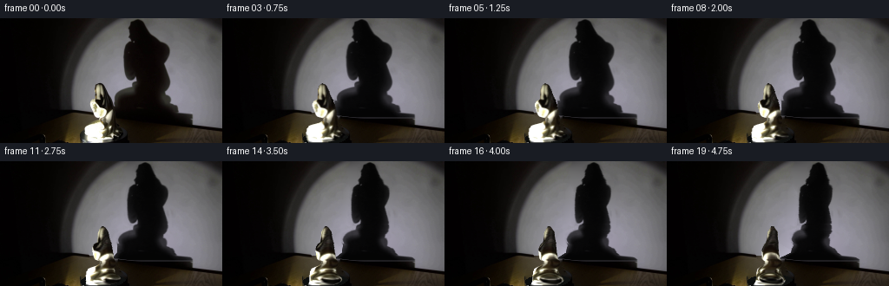
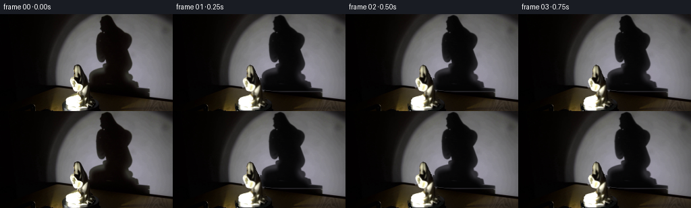
展开代码变化
--- 上一保存版本 +++ 本次保存版本 @@ -41,7 +41,7 @@ exclude=cv2.dilate(((shpoly>0.02)|(sm>0.02)).astype(np.uint8),np.ones((13,13),np.uint8))>0 sample=wall&~exclude&((xx.astype(int)%4)==0)&((yy.astype(int)%4)==0) coords=np.stack([xx[sample]/100,yy[sample]/100],1) -rbf=RBFInterpolator(coords,im[sample],kernel='thin_plate_spline',smoothing=.004,neighbors=100) +rbf=RBFInterpolator(coords,im[sample],kernel='thin_plate_spline',smoothing=.03) wallfit=rbf(np.stack([xx.ravel()/100,yy.ravel()/100],1)).reshape(H,W,3).astype(np.float32) wallfit=np.clip(wallfit,0,255) # The removal apron includes the actual penumbra rather than a hard polygon. @@ -52,7 +52,7 @@ # Optical opacity measured directly from the first frame. Multiplication preserves # the fixed spotlight gradient when the silhouette moves across the wall. trans=np.clip(im/np.maximum(wall_bg,1),.025,1) -alpha=(1-np.mean(trans,axis=2))*region +alpha=(1-np.mean(trans,axis=2)) alpha[sm>.01]=0 # Fill the small area covered by the foreground statuette. remove=(sm>.005).astype(np.uint8) @@ -61,13 +61,16 @@ wall_statue=(remove>0)&(yy<seam-1) bg[wall_statue]=wallfit[wall_statue] # Keep the turntable a fixed ellipse; only its material rotates. -platform=((xx-119.5)/27.5)**2+((yy-139.1)/9.0)**2<1 +platform=((xx-119.5)/27.5)**2+((yy-134.9)/8.1)**2<1 repair=(remove>0)&platform +# Soft, rounded, charcoal-colored disk top. Feather the photograph at its rim. +rho=np.sqrt(((xx-119.5)/27.5)**2+((yy-134.9)/8.1)**2) platform_color=np.empty_like(bg) -platform_color[:,:,0]=11+3*np.clip((xx-90)/56,0,1) -platform_color[:,:,1]=13+3*np.clip((xx-90)/56,0,1) -platform_color[:,:,2]=12+3*np.clip((xx-90)/56,0,1) -bg[repair]=platform_color[repair] +platform_color[:,:,0]=18+7*np.clip(-.3*(xx-119.5)/27.5-(yy-134.9)/14,0,1) +platform_color[:,:,1]=19+8*np.clip(-.3*(xx-119.5)/27.5-(yy-134.9)/14,0,1) +platform_color[:,:,2]=18+8*np.clip(-.3*(xx-119.5)/27.5-(yy-134.9)/14,0,1) +repair_weight=gaussian_filter(repair.astype(np.float32),.75)*np.clip((1.04-rho)*12,0,1) +bg=bg*(1-repair_weight[...,None])+platform_color*repair_weight[...,None] # Original shadow still behind the parts excluded for the statue: reconstruct that # zone without letting white foreground pixels become negative shadow opacity. for y in range(76,113): @@ -114,11 +117,11 @@ wscale=np.sqrt(c*c+sratio*sratio*s*s) center=171+(scenter-171)*c+sz*s # The pedestal and platform have rotational symmetry and remain fixed. - stationary=np.clip((np.arange(H)-105)/8,0,1) + stationary=np.clip((np.arange(H)-103)/7,0,1) wscale=wscale*(1-stationary)+stationary center=center*(1-stationary)+scenter*stationary mapx=scenter[:,None]+(xx-center[:,None])/wscale[:,None] - return cv2.remap(alpha,mapx.astype(np.float32),yy,cv2.INTER_LINEAR,borderMode=cv2.BORDER_CONSTANT,borderValue=0) + return gaussian_filter(cv2.remap(alpha,mapx.astype(np.float32),yy,cv2.INTER_LINEAR,borderMode=cv2.BORDER_CONSTANT,borderValue=0),.28) def object_at(theta): @@ -181,7 +184,7 @@ frames=[] for i in range(20): - theta=np.deg2rad(i*3.55) # constant 14.2 degrees/second, viewed from above + theta=np.deg2rad(i*2.6) # constant 10.4 degrees/second, viewed from above if i==0: frame=im.astype(np.uint8) else:
候选 03播放与检查图

候选 04播放与检查图
点击播放 · 原生 RGB 像素
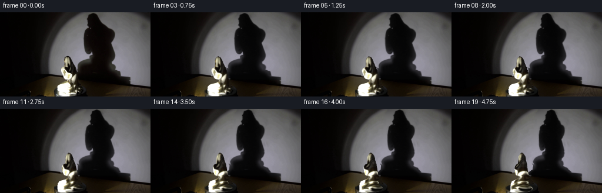
展开代码变化
--- 上一保存版本 +++ 本次保存版本 @@ -52,7 +52,7 @@ # Optical opacity measured directly from the first frame. Multiplication preserves # the fixed spotlight gradient when the silhouette moves across the wall. trans=np.clip(im/np.maximum(wall_bg,1),.025,1) -alpha=(1-np.mean(trans,axis=2)) +alpha=(1-np.mean(trans,axis=2))*(region>.001) alpha[sm>.01]=0 # Fill the small area covered by the foreground statuette. remove=(sm>.005).astype(np.uint8)
候选 05播放与检查图
点击播放 · 原生 RGB 像素

展开代码变化
--- 上一保存版本 +++ 本次保存版本 @@ -200,3 +200,9 @@ save(frames,ROOT) Image.fromarray(np.uint8(np.clip(bg,0,255))).save(ROOT/'.tmp/background.png') Image.fromarray(np.uint8(np.clip(alpha*255,0,255))).save(ROOT/'.tmp/shadow_alpha.png') +# A convenient encoded copy, alongside the lossless RGB artifact and local player. +video=cv2.VideoWriter(str(ROOT/'video.mp4'),cv2.VideoWriter_fourcc(*'mp4v'),4,(W,H)) +if video.isOpened(): + for frame in frames: + video.write(cv2.cvtColor(frame,cv2.COLOR_RGB2BGR)) + video.release()
可观测工具轨迹
实际执行的命令与返回图片。
命令 1exit 0
/bin/bash -lc "ls -la && cat prompt.txt && printf '\\n---RULES---\\n' && cat GENERATION_RULES.md"
命令 2exit 0
/bin/bash -lc "cat artifact_io.py; python - <<'PY'
from PIL import Image
im=Image.open('first_frame.png');print(im.size);im.resize((1024,576)).save('.tmp/first_big.png')
PY"命令 3exit 0
/bin/bash -lc "python - <<'PY'
from PIL import Image,ImageDraw
im=Image.open('first_frame.png').resize((1536,864))
d=ImageDraw.Draw(im)
for x in range(90,151,5):
d.line((x*6,70*6,x*6,144*6),fill=(255,20,20),width=1);d.text((x*6,70*6),str(x),fill='red')
for y in range(75,144,5):
d.line((90*6,y*6,150*6,y*6),fill=(255,20,20),width=1);d.text((90*6,y*6),str(y),fill='red')
im.crop((90*6,70*6,150*6,144*6)).save('.tmp/grid.png')
PY"命令 4exit 0
/bin/bash -lc "python - <<'PY'
from PIL import Image
im=Image.open('first_frame.png');im.crop((93,74,144,144)).resize((408,560)).save('.tmp/statue.png')
PY"命令 5exit 0
/bin/bash -lc "python - <<'PY' import importlib.util for name in ['numpy','scipy','cv2','PIL','numba']: print(name, bool(importlib.util.find_spec(name))) PY"
命令 6exit 0
/bin/bash -lc "python - <<'PY'
from PIL import Image
im=Image.open('first_frame.png');im.crop((125,0,232,127)).resize((642,762)).save('.tmp/shadow.png')
PY"命令 7exit 0
/bin/bash -lc "cat > generate.py <<'PY'
from pathlib import Path
import numpy as np
from PIL import Image, ImageDraw
from scipy.interpolate import RBFInterpolator
from scipy.ndimage import gaussian_filter, distance_transform_edt
import cv2
from artifact_io import save
ROOT=Path(__file__).resolve().parent
W,H=256,144
im=np.array(Image.open(ROOT/'first_frame.png').convert('RGB')).astype(np.float32)
yy,xx=np.mgrid[:H,:W].astype(np.float32)
# All contour and surface information is drawn from the supplied photograph.
statue_outline=[(111,77),(114,75.5),(117,76),(119,78),(122,84),(124,89),
(127,94),(129,99),(131,105),(132,111),(132.6,119),(133,125),(134,129),
(137,131),(140,132.5),(142,134.5),(141,137),(137,139),(130,141),
(120,142.5),(104,143),(98,142),(96.8,139),(96.3,133),(97.3,127),
(100,124),(105,122),(111,121),(115.8,118),(117,115),(113,114.5),
(109,113),(107,110.5),(105.5,107),(104.5,104),(103.6,101),(103.5,98),
(105,95.5),(107,94.5),(109.3,95),(109.5,90),(109,86),(109.5,81)]
def polygon(points,scale=4):
a=Image.new('L',(W*scale,H*scale),0)
ImageDraw.Draw(a).polygon([(int(x*scale),int(y*scale)) for x,y in points],fill=255)
return np.array(a.resize((W,H),Image.Resampling.LANCZOS),np.float32)/255
sm=polygon(statue_outline)
shadow_outline=[(151,3),(157,0.5),(162,3),(167,11),(174,18),(181,22),
(190,26),(194,31),(195,37),(193,44),(190,49),(192,56),(194,65),
(194,74),(191,80),(190,85),(196,89),(197,94),(194,98),(199,101),
(203,103),(205,109),(214,111),(222,112),(223,118),(221,120),
(138,112),(133,107),(132,99),(132,92),(135,87),(141,84),(150,81),
(157,80),(156,76),(153,73),(153,69),(150,71),(147,71),(144,69),
(142,65),(141,59),(142,51),(142,43),(143,36),(147,30),(153,27),
(152,25),(148,22),(148,18),(148,14),(146,11),(150,7)]
shpoly=polygon(shadow_outline)
# Smooth spotlight reconstruction, constrained only by the unoccluded wall.
seam=105.2+np.maximum(xx-71,0)*0.121
wall=(xx>79)&(yy<seam-1.8)
exclude=cv2.dilate(((shpoly>0.02)|(sm>0.02)).astype(np.uint8),np.ones((13,13),np.uint8))>0
sample=wall&~exclude&((xx.astype(int)%4)==0)&((yy.astype(int)%4)==0)
coords=np.stack([xx[sample]/100,yy[sample]/100],1)
rbf=RBFInterpolator(coords,im[sample],kernel='thin_plate_spline',smoothing=.004,neighbors=100)
wallfit=rbf(np.stack([xx.ravel()/100,yy.ravel()/100],1)).reshape(H,W,3).astype(np.float32)
wallfit=np.clip(wallfit,0,255)
# The removal apron includes the actual penumbra rather than a hard polygon.
region=gaussian_filter(cv2.dilate((shpoly>.1).astype(np.uint8),np.ones((7,7),np.uint8)).astype(np.float32),.7)
region*=np.clip((seam-yy)/1.3,0,1)
region*=np.clip((115.5-yy)/2,0,1) # the platform's low, rectangular shadow stays put
wall_bg=im*(1-region[...,None])+wallfit*region[...,None]
# Optical opacity measured directly from the first frame. Multiplication preserves
# the fixed spotlight gradient when the silhouette moves across the wall.
trans=np.clip(im/np.maximum(wall_bg,1),.025,1)
alpha=(1-np.mean(trans,axis=2))*region
alpha[sm>.01]=0
# Fill the small area covered by the foreground statuette.
remove=(sm>.005).astype(np.uint8)
remove=cv2.dilate(remove,np.ones((3,3),np.uint8))
bg=cv2.inpaint(np.uint8(np.clip(wall_bg,0,255)),remove,6,cv2.INPAINT_TELEA).astype(np.float32)
wall_statue=(remove>0)&(yy<seam-1)
bg[wall_statue]=wallfit[wall_statue]
# Keep the turntable a fixed ellipse; only its material rotates.
platform=((xx-119.5)/27.5)**2+((yy-139.1)/9.0)**2<1
repair=(remove>0)&platform
platform_color=np.empty_like(bg)
platform_color[:,:,0]=11+3*np.clip((xx-90)/56,0,1)
platform_color[:,:,1]=13+3*np.clip((xx-90)/56,0,1)
platform_color[:,:,2]=12+3*np.clip((xx-90)/56,0,1)
bg[repair]=platform_color[repair]
# Original shadow still behind the parts excluded for the statue: reconstruct that
# zone without letting white foreground pixels become negative shadow opacity.
for y in range(76,113):
sel=(remove[y]>0)&(np.arange(W)>128)&(y<seam[y])
# These pixels are at the shadow's lower-left edge.
if np.any(sel):
vals=alpha[y]
valid=(remove[y]==0)
bg[y,sel]=wallfit[y,sel]
alpha[y,sel]=np.interp(np.arange(W)[sel],np.arange(W)[valid],vals[valid])
# Photographic row sections define a smooth ceramic solid. Its depth is analytic;
# solving the turned ellipse gives an inverse texture map with no holes.
bounds=[]
for y in range(H):
ids=np.where(sm[y]>.3)[0]
if len(ids): bounds.append((y,ids[0]-.35,ids[-1]+.35))
ys=np.array([r[0] for r in bounds]);left=np.array([r[1] for r in bounds]);right=np.array([r[2] for r in bounds])
cent=(left+right)/2;rad=(right-left)/2
# Depth of the hood, shoulder, seated robe, and circular porcelain foot.
knot_y=np.array([76,81,89,95,103,112,118,124,131,137,143])
depth=np.interp(ys,knot_y,[2.0,5.8,6.0,7.3,9.0,10.0,10.6,12.5,13.7,16,17.7])
zc=np.interp(ys,knot_y,[4,4,3,2,0,0,1,-1,-1,0,0])
# Slightly off-axis details revolve with the same fixed spindle.
axis=119.7
# Shadow scanlines have the independent light-view of the same volume. Its
# horizontal perspective is greater than its vertical perspective in this setup.
scenter=np.full(H,171.,np.float32);srad=np.ones(H,np.float32)
for y in range(113):
ids=np.where(alpha[y]>.36)[0]
if len(ids):
scenter[y]=(ids[0]+ids[-1])/2
srad[y]=max((ids[-1]-ids[0])/2,1)
valid=np.where(srad>1)[0]
scenter[:113]=np.interp(np.arange(113),valid,scenter[valid])
srad[:113]=np.interp(np.arange(113),valid,srad[valid])
sz=np.interp(np.arange(H),[0,16,30,52,76,90,104,113,143],[9,8,2,0,0,-3,0,0,0])
sratio=np.interp(np.arange(H),[0,20,35,68,80,96,109,120,143],[.83,.88,.65,.69,.81,.52,.7,1,1])
def shadow_at(theta):
c,s=np.cos(theta),np.sin(theta)
wscale=np.sqrt(c*c+sratio*sratio*s*s)
center=171+(scenter-171)*c+sz*s
# The pedestal and platform have rotational symmetry and remain fixed.
stationary=np.clip((np.arange(H)-105)/8,0,1)
wscale=wscale*(1-stationary)+stationary
center=center*(1-stationary)+scenter*stationary
mapx=scenter[:,None]+(xx-center[:,None])/wscale[:,None]
return cv2.remap(alpha,mapx.astype(np.float32),yy,cv2.INTER_LINEAR,borderMode=cv2.BORDER_CONSTANT,borderValue=0)
def object_at(theta):
c,s=np.cos(theta),np.sin(theta)
# 3x supersampling keeps moving ceramic edges subpixel smooth.
S=3
h,w=H*S,W*S
x=(np.arange(w,dtype=np.float32)+.5)/S-.5
y=(np.arange(h,dtype=np.float32)+.5)/S-.5
cy=np.interp(y,ys,cent).astype(np.float32)[:,None]
a=np.interp(y,ys,rad).astype(np.float32)[:,None]
b=np.interp(y,ys,depth).astype(np.float32)[:,None]
z=np.interp(y,ys,zc).astype(np.float32)[:,None]
# Rotation of an ellipse centered at (cy-axis,z).
cx=axis+(cy-axis)*c+z*s
cz=-(cy-axis)*s+z*c
dx=x[None,:]-cx
R=np.sqrt(a*a*c*c+b*b*s*s)
inside=np.abs(dx)<R
# Front root of the implicit rotated elliptical cylinder.
A=s*s/(a*a)+c*c/(b*b)
B=2*dx*c*s*(1/(a*a)-1/(b*b))
C=dx*dx*(c*c/(a*a)+s*s/(b*b))-1
dz=(-B-np.sqrt(np.maximum(B*B-4*A*C,0)))/(2*A)
u=(dx*c-dz*s)/a
v=(dx*s+dz*c)/b
mx=np.broadcast_to(cy+a*u,(h,w)).astype(np.float32)
my=np.broadcast_to(y[:,None],(h,w)).astype(np.float32)
texture=cv2.remap(im,mx,my,cv2.INTER_LINEAR,borderMode=cv2.BORDER_REPLICATE)
nx0=u/a;nz0=v/b
norm=np.sqrt(nx0*nx0+nz0*nz0)
nx=(nx0*c+nz0*s)/np.maximum(norm,1e-6)
nz=(-nx0*s+nz0*c)/np.maximum(norm,1e-6)
# Fixed, warm spotlight. Preserve the observed ceramic albedo and its detail.
lx,lz=-.72,-.694
oldn_x=nx0/np.maximum(norm,1e-6)
oldn_z=-np.abs(nz0)/np.maximum(norm,1e-6)
light0=.26+.74*np.maximum(oldn_x*lx+oldn_z*lz,0)
light1=.26+.74*np.maximum(nx*lx+nz*lz,0)
gain=np.clip((light1/light0)**.53,.55,1.75)
# Existing specular bloom is softened as it turns away from the light source.
texture=np.clip(texture*gain[...,None],0,255)
back=v>0
# Seen newly around the side: continuous robe colour with restrained vertical
# porcelain folds, rather than introducing a new unobserved decoration.
az=np.arctan2(v,u)
folds=1+.12*np.sin(az*17+y[:,None]*.10)*np.sin(theta)**2
texture=np.where(back[...,None],texture*folds[...,None],texture)
# True rim coverage, integrated at the output resolution.
op=inside.astype(np.float32)
op*=((y[:,None]>ys[0]-.6)&(y[:,None]<ys[-1]+1))
# Keep the foot seated against the spindle; it is nearly axially symmetric.
foot=np.clip((y[:,None]-136)/7,0,1)
# Sample photographed contour at zero rotation for the first transition.
if abs(theta)<1e-5:
op=cv2.remap(sm,mx,my,cv2.INTER_LINEAR,borderMode=cv2.BORDER_CONSTANT)
premul=cv2.resize(texture*op[...,None],(W,H),interpolation=cv2.INTER_AREA)
aa=cv2.resize(op,(W,H),interpolation=cv2.INTER_AREA)
return premul,aa
frames=[]
for i in range(20):
theta=np.deg2rad(i*3.55) # constant 14.2 degrees/second, viewed from above
if i==0:
frame=im.astype(np.uint8)
else:
sh=shadow_at(theta)
frame=bg*(1-sh[...,None])
# The black disk's unobtrusive outer highlight follows its clockwise motion.
# The rotation is chiefly visible in the mounted, asymmetric statuette.
color,opacity=object_at(theta)
frame=frame*(1-opacity[...,None])+color
frame=np.uint8(np.clip(np.rint(frame),0,255))
frames.append(frame)
frames=np.stack(frames)
save(frames,ROOT)
Image.fromarray(np.uint8(np.clip(bg,0,255))).save(ROOT/'.tmp/background.png')
Image.fromarray(np.uint8(np.clip(alpha*255,0,255))).save(ROOT/'.tmp/shadow_alpha.png')
PY
OPENBLAS_NUM_THREADS=1 python generate.py"命令 8exit 0
/bin/bash -lc "python - <<'PY'
from PIL import Image
for f in ['frames/19.png','.tmp/background.png','frames/01.png']:
im=Image.open(f);im.resize((1024,576)).save('.tmp/'+f.split('/')[-1].replace('.png','_big.png'))
PY"命令 9exit 0
/bin/bash -lc "python - <<'PY'
from PIL import Image
import numpy as np
im=np.array(Image.open('first_frame.png'))
for y in [125,129,132,134,136,139,141,143]:
print(y, [(x,im[y,x].tolist()) for x in [91,93,95,98,103,115,132,138,141,144,147]])
PY"命令 10exit 0
/bin/bash -lc "python - <<'PY'
p='generate.py'
s=open(p).read().replace(\"smoothing=.004,neighbors=100\",\"smoothing=.03\")
s=s.replace(\"alpha=(1-np.mean(trans,axis=2))*region\",\"alpha=(1-np.mean(trans,axis=2))\")
s=s.replace(\"platform=((xx-119.5)/27.5)**2+((yy-139.1)/9.0)**2<1\", \"platform=((xx-119.5)/27.5)**2+((yy-134.9)/8.1)**2<1\")
a=s.index('platform_color=np.empty_like(bg)');b=s.index('# Original shadow still',a)
s=s[:a]+'''# Soft, rounded, charcoal-colored disk top. Feather the photograph at its rim.
rho=np.sqrt(((xx-119.5)/27.5)**2+((yy-134.9)/8.1)**2)
platform_color=np.empty_like(bg)
platform_color[:,:,0]=18+7*np.clip(-.3*(xx-119.5)/27.5-(yy-134.9)/14,0,1)
platform_color[:,:,1]=19+8*np.clip(-.3*(xx-119.5)/27.5-(yy-134.9)/14,0,1)
platform_color[:,:,2]=18+8*np.clip(-.3*(xx-119.5)/27.5-(yy-134.9)/14,0,1)
repair_weight=gaussian_filter(repair.astype(np.float32),.75)*np.clip((1.04-rho)*12,0,1)
bg=bg*(1-repair_weight[...,None])+platform_color*repair_weight[...,None]
''' +s[b:]
s=s.replace(\"stationary=np.clip((np.arange(H)-105)/8,0,1)\",\"stationary=np.clip((np.arange(H)-103)/7,0,1)\")
s=s.replace(\"return cv2.remap(alpha,mapx.astype(np.float32),yy,cv2.INTER_LINEAR,borderMode=cv2.BORDER_CONSTANT,borderValue=0)\",\"return gaussian_filter(cv2.remap(alpha,mapx.astype(np.float32),yy,cv2.INTER_LINEAR,borderMode=cv2.BORDER_CONSTANT,borderValue=0),.28)\")
s=s.replace(\"theta=np.deg2rad(i*3.55) # constant 14.2 degrees/second, viewed from above\",\"theta=np.deg2rad(i*2.6) # constant 10.4 degrees/second, viewed from above\")
open(p,'w').write(s)
PY
OPENBLAS_NUM_THREADS=1 python generate.py"命令 11exit 0
/bin/bash -lc "python - <<'PY'
p='generate.py';s=open(p).read().replace('alpha=(1-np.mean(trans,axis=2))','alpha=(1-np.mean(trans,axis=2))*(region>.001)');open(p,'w').write(s)
PY
OPENBLAS_NUM_THREADS=1 python generate.py"命令 12exit 1
/bin/bash -lc "python - <<'PY'
from PIL import Image
import numpy as np
from pathlib import Path
frames=np.stack([np.asarray(Image.open(p).convert('RGB')) for p in sorted(Path('frames').glob('*.png'))])
assert frames.shape==(20,144,256,3) and frames.dtype==np.uint8
assert np.array_equal(frames[0],np.array(Image.open('first_frame.png').convert('RGB')))
print('Validated: 20 RGB frames, 256Ã144, first frame identical.')
PY
which ffmpeg"命令 13exit 0
/bin/bash -lc "cat >> generate.py <<'PY' # A convenient encoded copy, alongside the lossless RGB artifact and local player. video=cv2.VideoWriter(str(ROOT/'video.mp4'),cv2.VideoWriter_fourcc(*'mp4v'),4,(W,H)) if video.isOpened(): for frame in frames: video.write(cv2.cvtColor(frame,cv2.COLOR_RGB2BGR)) video.release() PY OPENBLAS_NUM_THREADS=1 python generate.py ls -lh video.mp4 pixels.npz index.html"
视觉工具实际返回图片 1

视觉工具实际返回图片 2
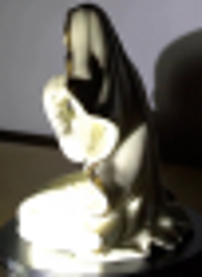
视觉工具实际返回图片 3
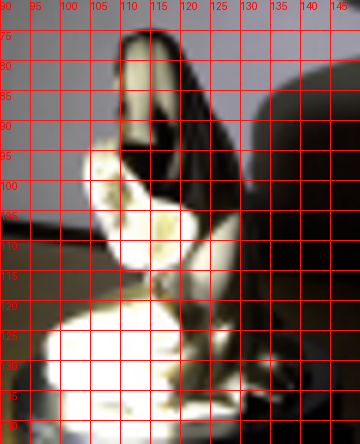
视觉工具实际返回图片 4
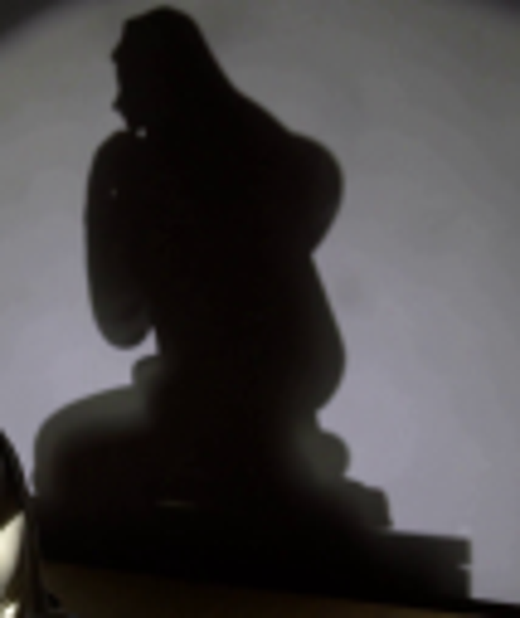
视觉工具实际返回图片 5

视觉工具实际返回图片 6

视觉工具实际返回图片 7
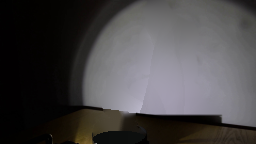
视觉工具实际返回图片 8
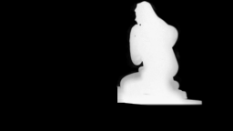
视觉工具实际返回图片 9
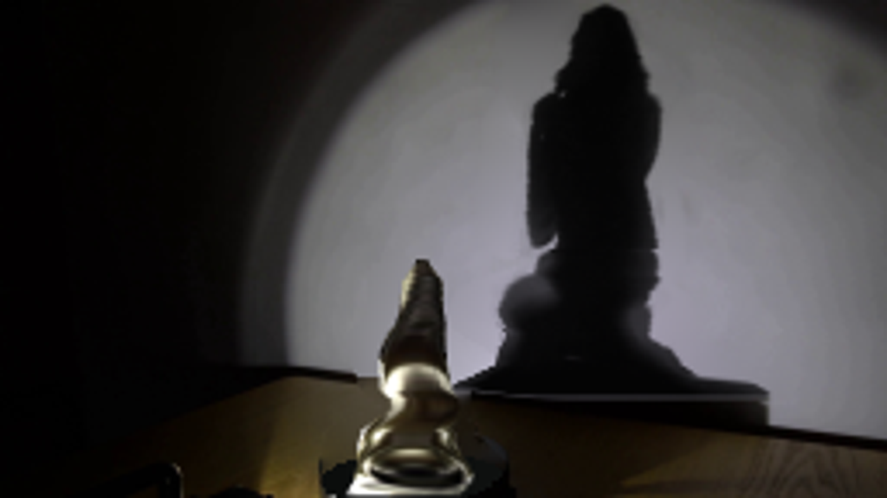
视觉工具实际返回图片 10
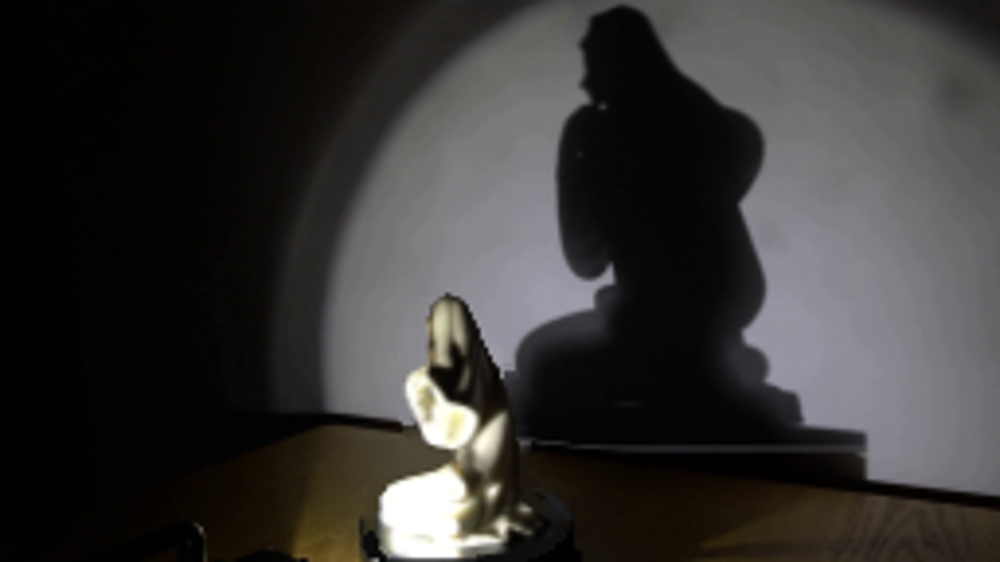
视觉工具实际返回图片 11
视觉工具实际返回图片 12
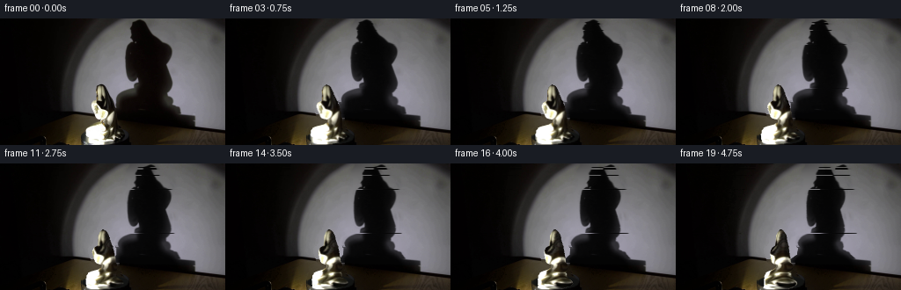
视觉工具实际返回图片 13

视觉工具实际返回图片 14
保存候选 5 份；完成命令 13 次；可验证图片返回 14 张。原始 API 响应与完整日志保留在本地。